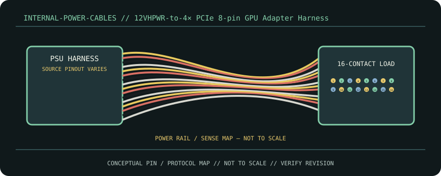

[ CABLE / ADAPTER RECORD // PCIE 12VHPWR ADAPTER HARNESS ]
12VHPWR-to-4× PCIe 8-pin GPU Adapter Harness
16-pin GPU end with sense contacts; four PCIe 8-pin (6+2) source inputs. Passive wiring cannot create supply capacity.

CLASSIFICATION: Internal power cables. Identify protocol, direction, pinout and exact cable revision before connection.
Interface and capability
| Standard / protocol | PCIe 12VHPWR adapter harness. Connector appearance alone does not establish compatibility. |
|---|---|
| Endpoint / pinout | 16-pin GPU end with sense contacts; four PCIe 8-pin (6+2) source inputs. Passive wiring cannot create supply capacity. |
| Capability / limits | 16-pin interface maximum is not an adapter rating; source count, wire gauge and supported power are adapter/GPU-manufacturer specific. |
| Certification / length | Standards define interface requirements, not every assembly’s performance. Certification, mode, current/power rating, direction and maximum length belong to the exact product/revision and complete channel; verify its manufacturer specification. Do not infer certification from connector shape or marketing terminology. |
Compatibility & handling
- Connect all required inputs, preferably separate PSU runs if directed. Never substitute EPS or SATA/Molex conversion; check exact GPU instructions.
- Inspect connector keying, latch, contact condition, shielding, jacket and model/revision marking. Stop if contacts are bent, loose, scorched, corroded or mismatched.
- Route without tension or sharp bends; follow product bend-radius, strain-relief, current and environmental limits. Test at the intended protocol and mode—physical fit is not a compatibility test.
Sources & further reading
- NVIDIA GeForce RTX 40 Series FAQPrimary standards-body or manufacturer reference for PCIe 12VHPWR adapter harness; confirm exact cable assembly, certification and revision.